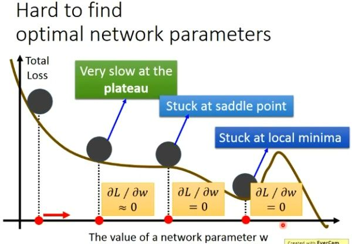
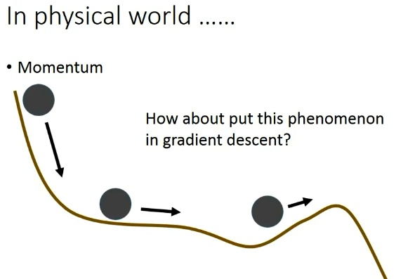
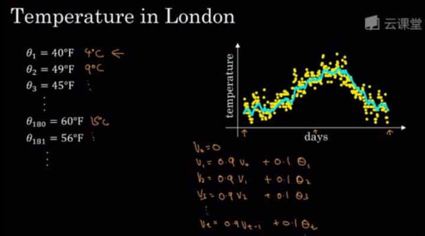
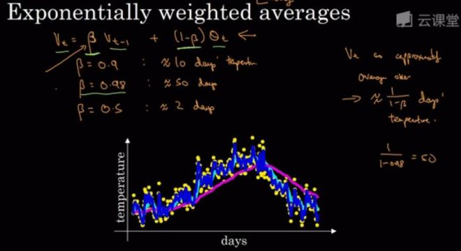
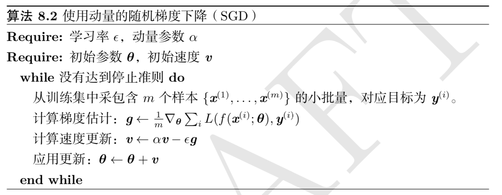

1 Momentum
Momentum 中文为：动量法
虽然随机梯度下降仍然是非常受欢迎的优化方法，但其学习过程有时会很慢，并且有的时候对于比较的复杂的模型，我们很难得到global minima， 当然他们的梯度在这些地方也是0，所以就再也不会更新参数值，一直卡在这些伪最优解上，如下图所示：

这三种伪最优解为：
- plateau: 稳定的水平
- saddle point: 鞍点
- local minima: 局部最小点
为了解决这个问题，Polyak 想到使用物理学中的惯性来解决，如下图所示：

上面是物理中的一种现象，我们可以想象，把一个小球放在这种实际的轨道上，这个小球并不会在上面我们说的梯度为0的地方就停止下来。因为在实际中的事物都是有惯性的，也就是momentum。那我们如果想要解决上面的问题，很自然的就会想能不能也给我们的gradient descent加上一个冲量呢？让他在这些梯度等于0的地方也能够像现实生活中的那样，去冲出这些伪最优解。
下面给出动量法的参数更新公式：
$$
\begin{split}
v_t & \leftarrow \beta v_{t-1} + \alpha \nabla_{\theta} J(\theta) \\\
\theta_t & \leftarrow \theta_{t-1} -v_t
\end{split}
$$
其中，动量超参数 $\beta$ 满足 $0 \le \beta < 1$ 。当 $\beta = 0$ 时，动量法等价于小批量随机梯度下降。
这是比较直观的理解动量法，网上还有从数学角度也就是指数移动平均来理解 动量法，下文中将对其进行讲解
2 指数加权移动平均
在介绍指数加权移动平均之前先介绍一下简单的移动平均法以及加权移动平均法
2.1 简单移动平均法
简单移动平均法 顾名思义，就是$t$前$N$个状态下值的平均值作为第$t$状态下的值，其公式如下：
$$
F_{t} = \frac{(x_t+x_{t-1}+ x_{t-2}+\ldots + x_{t-(N-1)})}{N} = \frac{1}{N} \sum_{i = t-N+1}^{t} x_i
$$
公式解释如下：
- $F_{t}$: 第$t$个状态下的预测值
- $N$: 需要计算的移动状态个数
- $x_i, (i=t, t-1, \ldots , t-N+1)$: 第$i$状态下的值
其优缺点为：
优点:
- 计算量少
- 移动平均线能较好的反应时间序列的趋势以及变化
缺点:
- 计算移动平均必须具有$N$个过去观察值，当需要预测大量的数值时，就必须存储大量数据
- $N$个过去观察值中每一个权数都相等，而早于$(t-N+1)$期的观察值的权数等于0，而实际上往往是最新观察值包含更多信息，因具有更大的权重。
2.2 加权移动平均法
为了解决简单移动平均法 中的第二个缺点中的权重问题，就有了加权移动平均法， 其公式为：
$$
F_{t} = \frac{(w_t x_t+x_{t-1}+ w_{t-2} x_{t-2}+\ldots + w_{t-(N-1)} x_{t-(N-1)})}{N} = \frac{1}{N} \sum_{i = t-N+1}^{t} w_i x_i
$$
其中$w_i$ 是第 $i$ 状态下的权值。
在运用加权平均时，权重的选择是一个应该注意的问题，经验法和试算法使选择权重最简单的方法。一般而言，最近期的数据最能预测未来的情况。因而权重应大一些。
其优缺点为：
优点:
- 使用加权移动平均法能平滑掉突然波动对预测结果的影响
缺点:
- 加大移动平均法的期数会使平滑波动效果更好，但会使预测值对数据实际变动更不敏感, 也就是图像会往右移动，有时延
- 移动平均值并不能总是很好的反应出趋势。由于是平均值，预测值总是停留在过去的水平上而无法预计会导致将来更高或更低的波动。
- 移动平均法要大量的过去数据记录
- 需要不断修改平均值，以之作为预测值。
2.3 指数加权移动平均法
指数平滑法是对加权移动平均法的改进，它是将前期预测值和前期实际值分别确定不同的权数(二者权数和为1)。只需要三个数据，所有预测方法中，指数平滑法采用较多，常用语短期预测，指数平滑法有很多种，有一次指数平滑预测、二次指数平滑预测以及三次指数平滑预测。在这里这说一次指数平滑预测。
给定超参数 $0 \le \beta < 1$，利用前一期的预测值 $F_{t-1}$ 以及当前时间步另一变量 $x_t$ 的线性组合：
$$
F_t \leftarrow \beta F_{t-1} + (1-\beta)x_t
$$
选择合适的 $\beta$ 值。实际需求稳定，选取较小的 $\beta$ 值，反之选取较大的 $\beta$ 值。
为了便于理解，可以参考吴恩达老师的 slides，
注：其中温度符号用错了

其实这里的曲线就是当 $v_0=0$作为移动平均的初始值，然后将对应的实际的温度值带入递归式子中，然后得出的曲线。其实从上面也可以看出来 $\beta$ 的选择尤为的重要。这个温度的例子$\beta=0.9$。可以看出曲线要平坦一点，这是因为你平均了几天的温度，所以这个曲线波动更小，更加平坦，缺点就是曲线会失去时效性，在图中的表现就是曲线会向右移动，那因为现在要平均的温度值更多，要平均更多的值，指数加权平均公式在温度变化的时，能更加适应缓慢一些，所以会出现一定的延迟。

- $\beta = 0.9$的时候，曲线会更加平缓(稳定性高)，但是趋势曲线会向右移动(时效性差)
- $\beta = 0.5$的时候，由于只平均了两天的温度，平均的数据太少了，得到的曲线会有更多的噪声也就是(稳定性差)更有可能出现异常值，但是趋势曲线能够更加适应拟合你的原始数据，也就是趋势曲线的(时效性高)
可以看到$\beta$的值直接决定了平均的天数，下面将使用公式进行推导
我们可以对其进行展开：
$$
\begin{split}
F_t & = \beta F_{t-1} + (1-\beta) x_t \\\
&= \beta^2 F_{t-2} + (1-\beta)\beta x_{t-1} + (1-\beta) x_t \\\
&= \beta^3 F_{t-3} + (1-\beta)\beta^2 x_{t-2} + (1-\beta)\beta x_{t-1} + (1-\beta) x_t \\\
&= \ldots
\end{split}
$$
令$n = \frac{1}{1-\beta}$, 那么$(1-\frac{1}{n})^n = \beta^{\frac{1}{1-\beta}}$
因为
$$
\lim_{n \to \infty }(1-\frac{1}{n})^n = \exp(-1)
$$
所以当$\beta \to 1$ 时，$\beta^{\frac{1}{1-\beta}} = \exp(-1)$, 如$0.95^20 \approx \exp(-1)$， 如果把 $\exp(−1)$ 当作一个比较小的数，我们可以在近似中忽略所有含 $\beta^{\frac{1}{1-\beta}}$ 和比 $\beta^{\frac{1}{1-\beta}}$ 更高阶的系数的项。例如，当 $\beta=0.95$ 时，
$$
\begin{split}
F_t &= (1-\beta)(\beta^0 x_t + \beta^1 x_{t-1} + \ldots + \beta^19x_{t-19} + \ldots) \\\
&= 0.05\sum_{i=0}^{19} 0.95^i x_{t-i}
\end{split}
$$
因此，在实际中，我们常常将 $F_t$ 看作是对最近 $\frac{1}{1-\beta}$个时间步的 $x_t$ 值的加权平均。例如，当 $\beta=0.95$ 时， $F_t$ 可以被看作对最近$20$个时间步值的加权平均；当 $\beta=0.9$ 时， $F_t$ 可以看作是对最近$10$个时间步值的加权平均。而且，离当前时间步 $t$ 越近的 $x_t$ 值获得的权重越大（越接近1）。
3 由指数加权移动平均理解动量法
现在，我们对动量法的速度变量做变形：
$$
v_t \leftarrow \beta v_{t-1} + (1-\beta)(\frac{1}{1-\beta} \alpha \nabla_{\theta}(\theta))
$$
由指数加权移动平均的形式可得，速度变量 $v_t$ 实际上对序列
$$
\left \{ \frac{\alpha \nabla^{t-i}_{\theta}(\theta)}{1-\beta}, i=0,1,\ldots, \frac{1}{1-\beta} -1 \right \}
$$
做了指数加权移动平均。换句话说，相比于小批量随机梯度下降，动量法在每个时间步的自变量更新量近似于将前者对应的最近$\frac{1}{1-\beta}$ 个时间步的更新量做了指数加权移动平均后再除以$1-\beta$, 所以，在动量法中，自变量在各个方向上的移动幅度不仅取决当前梯度，还取决于过去的各个梯度在各个方向上是否一致。
4 算法过程
